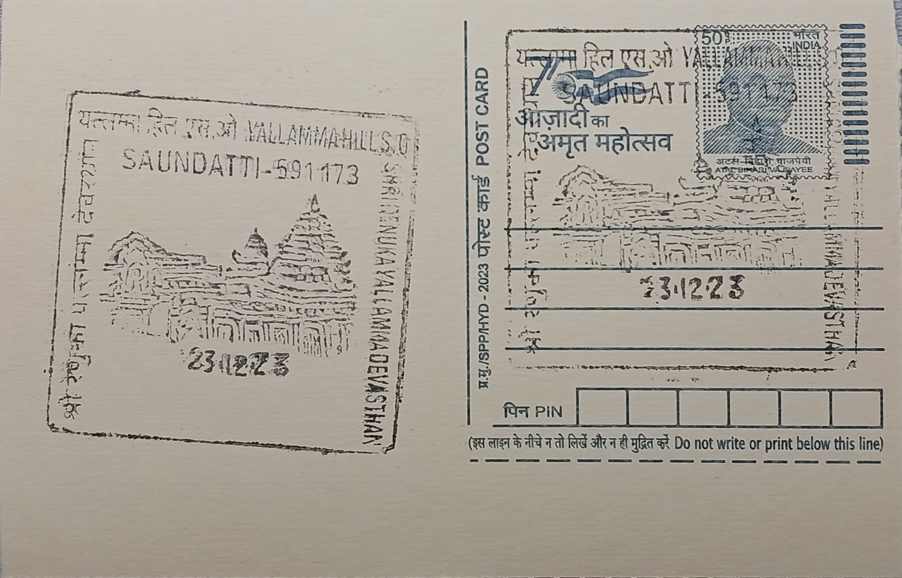

Sri Renuka Yallamma Devasthan
ಶ್ರೀ ರೇಣುಕಾ ಎಲ್ಲಮ್ಮ ದೇವಸ್ಥಾನ


The temple at the heart of Yallamma Hill, near Saundatti in Belagavi district, is dedicated to the goddess Yellamma, identified in Puranic tradition with Renuka, wife of the sage Jamadagni and mother of Parashurama. According to the legend, Renuka was beheaded by her son on his father's command after a lapse of chastity, and was subsequently restored to life when Parashurama, granted a boon, pleaded for her revival; this episode of death and restoration underlies her veneration as a mother goddess linked with fertility and protection. The hill on which the shrine stands was earlier known as Siddhachal Parvat, part of the Sidhachal or Ramagiri range overlooking the Malaprabha river, and came to be called Yellammanna Gudda after the goddess herself, a naming that reflects how the site's identity grew directly out of her cult.
Yellamma worship is among the most widespread folk Shakti traditions of the Deccan, spanning Karnataka, Maharashtra, and parts of Andhra Pradesh, and the Saundatti shrine functions as its principal pilgrimage centre, drawing an estimated two to six lakh devotees during the major annual fair held in the Hindu month of Magha (January-February). The site's significance is historical as well as devotional: archaeological evidence on the hill points to occupation from the mid-8th to mid-11th centuries, spanning the early Rashtrakuta and late Chalukya periods, alongside megalithic tombs that predate even these layers, making the hill a palimpsest of settlement long before the present temple was raised. This continuity of use underlies the site's standing as one of Karnataka's foremost folk-goddess pilgrimage destinations, distinct from and older than much of the mainstream Puranic temple network of the region.
The present temple structure is traditionally held to have been commissioned in 1514 by Bomappa Nayak of Raybag, and it was built in a blend of Chalukyan and Rashtrakutan architectural idioms, with carvings that also show discernible Jain influence, a mixing of styles consistent with the hill's long and layered occupation history. The complex is entered through grand mahadwara gateways with carved doors flanked by deepa stambhas, or lamp pillars, and the sanctum houses an image of the goddess fashioned from unbaked clay and dressed in elaborate jewellery, a form that distinguishes it from stone or metal cult images more typical of larger Puranic temples. Subsidiary shrines within the same complex are dedicated to Shiva, Vishnu, and Ganesha, situating the primarily Shakta shrine within a wider devotional landscape shared with mainstream Hindu worship.
A defining and more troubling feature of the Yellamma cult at Saundatti has been its historical entanglement with the devadasi system, under which girls were ceremonially dedicated to the goddess and, in practice, often channelled into ritualised prostitution; older women initiated through this practice came to be known locally as jogathis, regarded as intermediaries between devotees and the goddess. The Government of Karnataka outlawed the practice through the Devadasi Prohibition Act of 1982, and successive state and civil-society campaigns have since worked to end dedication ceremonies, though researchers and journalists have documented that clandestine initiations persisted at the site for years afterward, making Saundatti a recurring focus of anti-trafficking and rehabilitation efforts aimed at women formerly or informally bound to the tradition.
Pilgrim infrastructure around the hill includes the Jogula Bhavi, a tank where devotees bathe before darshan, and the fair itself remains administered jointly by temple trust authorities and Karnataka state police and civic agencies, who manage crowd control and sanitation for the hundreds of thousands who gather each Magha season. State tourism promotion, including listings by the Karnataka tourism department and the Incredible India portal, now presents the temple primarily as a heritage and pilgrimage destination alongside the Parasgad fort and other sites in the district, even as non-governmental organisations continue outreach work among jogathi women in the surrounding villages. The temple today thus operates simultaneously as an active mass pilgrimage site under institutional oversight and as the focal point of an unresolved social reform effort tied directly to its own ritual past.
| Date of Introduction | March 14, 2022 |
|---|---|
| Address | Sub Postmaster, |
| Yallamma Hill SO, | |
| Belagavi (dt.), Karnataka - 591173. |